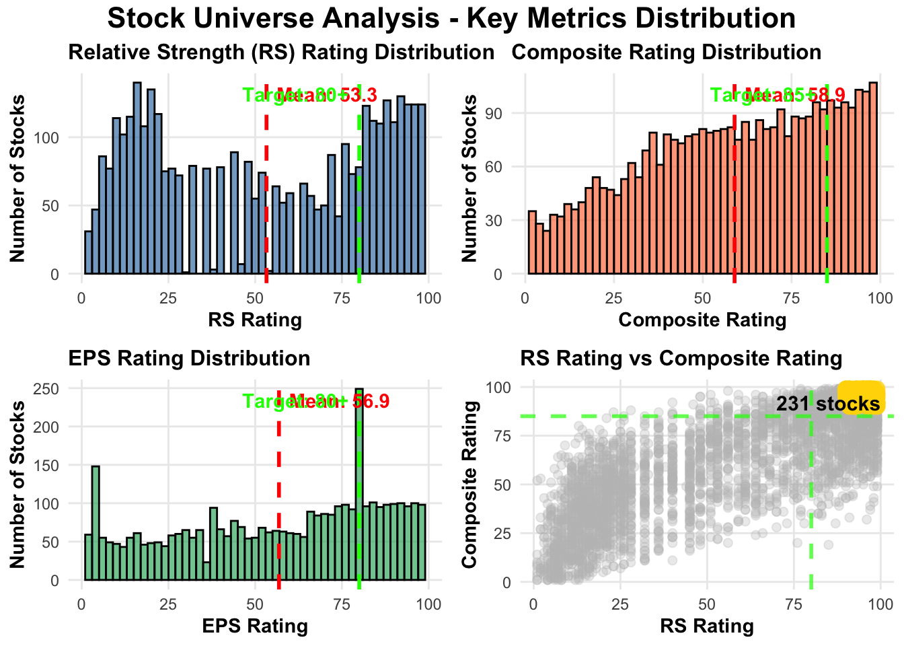

#!/usr/bin/env Rscript
# Stock Analysis Visualizations in R
# Creates distribution charts and top stocks bar chart
# Load required libraries
library(data.table)
library(dplyr)
Attaching package: 'dplyr'The following objects are masked from 'package:data.table':
between, first, lastThe following objects are masked from 'package:stats':
filter, lagThe following objects are masked from 'package:base':
intersect, setdiff, setequal, unionlibrary(readr)
library(ggplot2)
library(gridExtra)
Attaching package: 'gridExtra'The following object is masked from 'package:dplyr':
combinelibrary(scales)
Attaching package: 'scales'The following object is masked from 'package:readr':
col_factor# ===============================================================================
# LOAD DATA
# ===============================================================================
cat("Loading data...\n")Loading data...# Load the original data
df <- fread("data/Universe.csv", stringsAsFactors = FALSE)
# Load the top stocks from previous analysis
top_stocks <- read_csv("top_quality_stocks.csv", show_col_types = FALSE)
# Convert relevant columns to numeric
numeric_cols <- c('RS Rating', 'Comp Rating', 'EPS Rating', 'Market Cap (mil)',
'% Chg 3 Months', '% Chg 6 Months')
for (col in numeric_cols) {
if (col %in% names(df)) {
df[[col]] <- suppressWarnings(as.numeric(df[[col]]))
}
}
# Filter out ETFs
df_stocks <- df %>%
filter(ETF != 'Yes' | is.na(ETF)) %>%
filter(`ETF/Closed-End Fund` != 'Yes' | is.na(`ETF/Closed-End Fund`)) %>%
filter(`Market Cap (mil)` > 300)
# ===============================================================================
# CREATE DISTRIBUTION CHARTS (4-PANEL)
# ===============================================================================
cat("Creating distribution charts...\n")Creating distribution charts...# Calculate means for reference lines
rs_mean <- mean(df_stocks$`RS Rating`, na.rm = TRUE)
comp_mean <- mean(df_stocks$`Comp Rating`, na.rm = TRUE)
eps_mean <- mean(df_stocks$`EPS Rating`, na.rm = TRUE)
# 1. RS Rating Distribution
p1 <- ggplot(df_stocks, aes(x = `RS Rating`)) +
geom_histogram(bins = 50, fill = "steelblue", color = "black", alpha = 0.7) +
geom_vline(xintercept = rs_mean, color = "red", linetype = "dashed", size = 1) +
geom_vline(xintercept = 80, color = "green", linetype = "dashed", size = 1) +
annotate("text", x = rs_mean, y = Inf, label = sprintf("Mean: %.1f", rs_mean),
vjust = 2, hjust = -0.1, color = "red", fontface = "bold") +
annotate("text", x = 80, y = Inf, label = "Target: 80+",
vjust = 2, hjust = 1.1, color = "green", fontface = "bold") +
labs(title = "Relative Strength (RS) Rating Distribution",
x = "RS Rating", y = "Number of Stocks") +
theme_minimal() +
theme(plot.title = element_text(face = "bold", size = 12),
axis.title = element_text(face = "bold", size = 11),
panel.grid.minor = element_blank())Warning: Using `size` aesthetic for lines was deprecated in ggplot2 3.4.0.
ℹ Please use `linewidth` instead.# 2. Composite Rating Distribution
p2 <- ggplot(df_stocks, aes(x = `Comp Rating`)) +
geom_histogram(bins = 50, fill = "coral", color = "black", alpha = 0.7) +
geom_vline(xintercept = comp_mean, color = "red", linetype = "dashed", size = 1) +
geom_vline(xintercept = 85, color = "green", linetype = "dashed", size = 1) +
annotate("text", x = comp_mean, y = Inf, label = sprintf("Mean: %.1f", comp_mean),
vjust = 2, hjust = -0.1, color = "red", fontface = "bold") +
annotate("text", x = 85, y = Inf, label = "Target: 85+",
vjust = 2, hjust = 1.1, color = "green", fontface = "bold") +
labs(title = "Composite Rating Distribution",
x = "Composite Rating", y = "Number of Stocks") +
theme_minimal() +
theme(plot.title = element_text(face = "bold", size = 12),
axis.title = element_text(face = "bold", size = 11),
panel.grid.minor = element_blank())
# 3. EPS Rating Distribution
p3 <- ggplot(df_stocks, aes(x = `EPS Rating`)) +
geom_histogram(bins = 50, fill = "mediumseagreen", color = "black", alpha = 0.7) +
geom_vline(xintercept = eps_mean, color = "red", linetype = "dashed", size = 1) +
geom_vline(xintercept = 80, color = "green", linetype = "dashed", size = 1) +
annotate("text", x = eps_mean, y = Inf, label = sprintf("Mean: %.1f", eps_mean),
vjust = 2, hjust = -0.1, color = "red", fontface = "bold") +
annotate("text", x = 80, y = Inf, label = "Target: 80+",
vjust = 2, hjust = 1.1, color = "green", fontface = "bold") +
labs(title = "EPS Rating Distribution",
x = "EPS Rating", y = "Number of Stocks") +
theme_minimal() +
theme(plot.title = element_text(face = "bold", size = 12),
axis.title = element_text(face = "bold", size = 11),
panel.grid.minor = element_blank())
# 4. Scatter plot - RS Rating vs Comp Rating
top_performers <- df_stocks %>%
filter(`RS Rating` >= 90, `Comp Rating` >= 90)
p4 <- ggplot() +
geom_point(data = df_stocks %>% filter(!is.na(`RS Rating`), !is.na(`Comp Rating`)),
aes(x = `RS Rating`, y = `Comp Rating`),
alpha = 0.3, size = 2, color = "gray") +
geom_point(data = top_performers,
aes(x = `RS Rating`, y = `Comp Rating`),
alpha = 0.8, size = 4, color = "gold", shape = 16) +
geom_hline(yintercept = 85, color = "green", linetype = "dashed", size = 1, alpha = 0.7) +
geom_vline(xintercept = 80, color = "green", linetype = "dashed", size = 1, alpha = 0.7) +
annotate("text", x = 85, y = 92,
label = sprintf("%d stocks", nrow(top_performers)),
fontface = "bold", size = 4) +
labs(title = "RS Rating vs Composite Rating",
x = "RS Rating", y = "Composite Rating") +
theme_minimal() +
theme(plot.title = element_text(face = "bold", size = 12),
axis.title = element_text(face = "bold", size = 11),
panel.grid.minor = element_blank(),
legend.position = "bottom")
# Combine all plots
combined_plot <- grid.arrange(
p1, p2, p3, p4,
ncol = 2,
top = grid::textGrob("Stock Universe Analysis - Key Metrics Distribution",
gp = grid::gpar(fontsize = 16, fontface = "bold"))
)Warning: Removed 233 rows containing non-finite values (`stat_bin()`).
# Save the combined chart
ggsave("stock_analysis_charts.png", combined_plot,
width = 16, height = 12, dpi = 300, bg = "white")
cat("✓ Distribution charts saved: stock_analysis_charts.png\n")✓ Distribution charts saved: stock_analysis_charts.png# ===============================================================================
# CREATE TOP 15 STOCKS BAR CHART
# ===============================================================================
cat("Creating top 15 stocks chart...\n")Creating top 15 stocks chart...# Prepare top 15 data
top_15 <- top_stocks %>%
head(15) %>%
mutate(
Label = paste0(Symbol, " - ", substr(Name, 1, 25)),
Color_Category = case_when(
`Quality Score` >= 84 ~ "Exceptional (≥84)",
`Quality Score` >= 82 ~ "Excellent (82-84)",
TRUE ~ "Very Good (<82)"
)
) %>%
arrange(`Quality Score`) %>%
mutate(Label = factor(Label, levels = Label))
# Create color palette
color_palette <- c(
"Exceptional (≥84)" = "#2E7D32",
"Excellent (82-84)" = "#1976D2",
"Very Good (<82)" = "#0288D1"
)
# Create bar chart
p_top15 <- ggplot(top_15, aes(x = Label, y = `Quality Score`, fill = Color_Category)) +
geom_col(color = "black", size = 0.5) +
geom_text(aes(label = sprintf("%.1f", `Quality Score`)),
hjust = -0.2, fontface = "bold", size = 3.5) +
coord_flip() +
scale_fill_manual(values = color_palette, name = "Performance Category") +
scale_y_continuous(limits = c(0, max(top_15$`Quality Score`) * 1.1),
expand = c(0, 0)) +
labs(title = "Top 15 Stocks by Quality Score",
x = NULL,
y = "Quality Score") +
theme_minimal() +
theme(
plot.title = element_text(face = "bold", size = 14, hjust = 0.5, margin = margin(b = 15)),
axis.title.x = element_text(face = "bold", size = 12, margin = margin(t = 10)),
axis.text.y = element_text(size = 10),
axis.text.x = element_text(size = 10),
legend.position = "bottom",
legend.title = element_text(face = "bold", size = 10),
legend.text = element_text(size = 9),
panel.grid.major.y = element_blank(),
panel.grid.minor = element_blank(),
panel.grid.major.x = element_line(color = "gray90")
)
# Save the top 15 chart
ggsave("top_15_stocks.png", p_top15,
width = 14, height = 10, dpi = 300, bg = "white")
cat("✓ Top 15 chart saved: top_15_stocks.png\n")✓ Top 15 chart saved: top_15_stocks.png# ===============================================================================
# CREATE ADDITIONAL SECTOR ANALYSIS CHART
# ===============================================================================
cat("Creating sector analysis chart...\n")Creating sector analysis chart...# Analyze by sector if sector data is available
if ("Sector" %in% names(df_stocks)) {
# Calculate average quality score by sector (for sectors with sufficient data)
sector_analysis <- df_stocks %>%
filter(!is.na(Sector), Sector != "", Sector != "-") %>%
mutate(
`Quality Score` =
(`RS Rating` * 0.25) + (`Comp Rating` * 0.25) + (`EPS Rating` * 0.20)
) %>%
group_by(Sector) %>%
summarise(
Count = n(),
Avg_Quality = mean(`Quality Score`, na.rm = TRUE),
Avg_RS = mean(`RS Rating`, na.rm = TRUE),
Avg_Comp = mean(`Comp Rating`, na.rm = TRUE),
.groups = 'drop'
) %>%
filter(Count >= 10) %>% # Only sectors with at least 10 stocks
arrange(desc(Avg_Quality)) %>%
head(15)
if (nrow(sector_analysis) > 0) {
sector_analysis <- sector_analysis %>%
mutate(Sector = factor(Sector, levels = rev(Sector)))
p_sector <- ggplot(sector_analysis, aes(x = Sector, y = Avg_Quality)) +
geom_col(aes(fill = Avg_Quality), color = "black", size = 0.3) +
geom_text(aes(label = sprintf("%.1f", Avg_Quality)),
hjust = -0.2, fontface = "bold", size = 3) +
geom_text(aes(label = paste0("n=", Count)),
hjust = 1.2, color = "white", fontface = "bold", size = 2.5) +
coord_flip() +
scale_fill_gradient2(low = "#E3F2FD", mid = "#42A5F5", high = "#0D47A1",
midpoint = 60, name = "Avg Quality Score") +
scale_y_continuous(limits = c(0, max(sector_analysis$Avg_Quality) * 1.15),
expand = c(0, 0)) +
labs(title = "Average Quality Score by Sector",
subtitle = "(Sectors with 10+ stocks)",
x = NULL,
y = "Average Quality Score") +
theme_minimal() +
theme(
plot.title = element_text(face = "bold", size = 14, hjust = 0.5),
plot.subtitle = element_text(size = 10, hjust = 0.5, color = "gray40"),
axis.title.x = element_text(face = "bold", size = 11),
axis.text = element_text(size = 9),
legend.position = "right",
panel.grid.major.y = element_blank(),
panel.grid.minor = element_blank()
)
ggsave("sector_analysis.png", p_sector,
width = 12, height = 10, dpi = 300, bg = "white")
cat("✓ Sector analysis chart saved: sector_analysis.png\n")
}
}✓ Sector analysis chart saved: sector_analysis.png# ===============================================================================
# COMPLETE
# ===============================================================================
cat("\n")cat("================================================================================\n")================================================================================cat("VISUALIZATION COMPLETE\n")VISUALIZATION COMPLETEcat("================================================================================\n")================================================================================cat("\nGenerated files:\n")
Generated files:cat(" - stock_analysis_charts.png (4-panel distribution charts)\n") - stock_analysis_charts.png (4-panel distribution charts)cat(" - top_15_stocks.png (bar chart of top performers)\n") - top_15_stocks.png (bar chart of top performers)if (file.exists("sector_analysis.png")) {
cat(" - sector_analysis.png (sector comparison)\n")
} - sector_analysis.png (sector comparison)cat("\n")